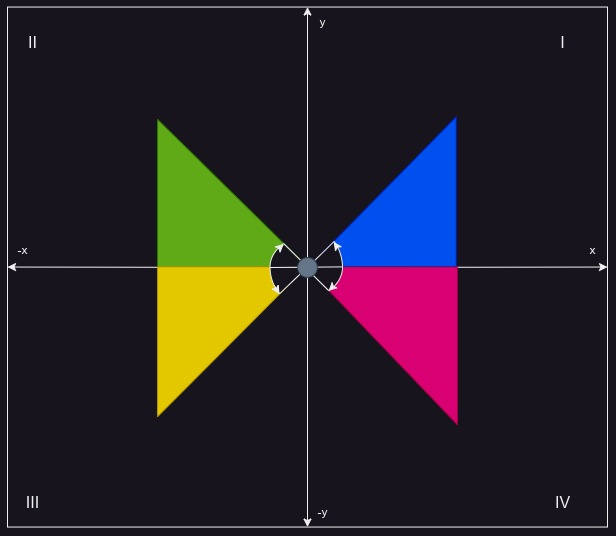

Conversión de sistema de referencia.
De acuerdo a como se señaló en el capítulo Sistemas de Referencia, algunas de las diferentes coordenadas que existen para representar un elemento (objeto) fueron definidas muy resumidamente. Sin embargo algo que se puede reconocer es que cada uno de estos sistemas es que toman una relación íntima, estas son sus componentes. En este apartado mostraré una forma de pasar de un sistema coordenado a otro con la finalidad de comprender la relación que abordan cada uno de ellos.
Nota: Puedes tener un exceso de información con respecto de un sistema \(\mathbb{R}^2\) que es convertido a un sistema \(\mathbb{R}^3\), sin embargo es importante saber que ocurre lo contrario de un sistema de \(\mathbb{R}^3\) hacia un sistema \(\mathbb{R}^2\) en tal caso puede que los datos no sean recuperados a como eran en un principio y es mejor tratar este tipo de conversión con cautela.
Dominio del ángulo a través de la función tangente:
Para cualquier ángulo obtenido mediante la tangente es posible que se tenga que apegar a ciertas condiciones para obtener el valor deseado, no solo basta con enviar la instrucción matemática en la calculadora, sino que requiere de ciertas nociones para determinar el ángulo en la dirección correcta. Para cualquier ángulo descrito en el plano cartesiano, recordar que la función tangente funciona en realción a los lados de un triángulo rectángulo, por lo que es importante identificar el dominio en el que se encuentra el tríangulo rectangulo en el plano cartesiano.

En la imagen de arriba se ha dividido el plano cartesiano en 4 secciones a las que se les denomina cuadrantes y se enumeran en números (de preferencia) romanos y sentido antihorario, además de ello se han colocado 4 triángulos indicando el sentido en el que se describen los valores de sus ángulos. La función que expresa la relación del ángulo con respecto de los catetos opuestos y adyacentes es: $$ \tan{\alpha} = \frac{opuesto}{adyacente} $$ Y la expresión para obtener el ángulo es: $$ \alpha = \arctan{\frac{opuesto}{adyacente}} $$ La igualdad se cumple siempre que el cateto adyacente sea distinto de cero por lo cual, la primera norma válida para la función es:
I. Para \(adyacente \neq 0\) entonces \(\alpha\) existe, de otra forma \(\alpha\) no está definido.
Si tanto el cateto opuesto como el adyacente son iguales a cero, entonces eso quiere decír que no hay un ángulo, por lo que,
II. Si \(x,y = 0\) entonces \(\alpha = 0°\).
Si cateto adyacente es mayor a cero y cateto opuesto es igual a cero entonces el ángulo es igual a cero. Caso inverso sucede que \(\alpha\) es un ángulo recto.
III. Si \(adyacente>0\) y \(opuesto=0\) entonces \(\alpha=0°\).
IV. Si \(opuesto>0\) y \(adyacente=0\) eontonces \(\alpha=90°\).
Los siguientes casos indican que se debe hacer en caso de que los catetos sean menores a cero.
V. Si \(adyacente<0\) pero \(opuesto\) es positivo, entonces se encuentra en el segundo cuadrante del plano y el ángulo resultante es horario, entonces para el ángulo \(\alpha\): $$ \alpha = 180 + \arctan{ \frac{opuesto}{adyacente} } $$ VI. Si \(adyacente, opuesto< 0\) entonces el ángulo se encuentra en el tercer cuadrante y el ángulo es antihorario: $$ \alpha = 270 - \arctan{ \frac{opuesto}{adyacente} } $$ VII. Si \(opuesto<0\) pero \(adyacente\) es positivo, entonces se encuentra en el cuarto cuadrante del plano y el ángulo resultante es horario, entonces para el ángulo \(\alpha\): $$ \alpha = 360 + \arctan{ \frac{opuesto}{adyacente} } $$ Estas propociciones se utilizarán en la sección Algorítmo y posteriores.
Sistemas Bidimensionales.
Coordenadas Cartesianas-Polares.
Para una coordenada cartesiana, se verifican los valores para las dos componenetes en el punto \(p\) donde sus compoenetes son \((x,y)\), y están dadas por por las siguientes ecuaciones: $$ x = r *\cos{\theta} $$ $$ y = r *\sin{\theta} $$ De forma relevante se puede expresar en terminos para cualquiera de las dos ecuaciones anteriores que: $$ \frac{x}{r} = \cos{\theta}\\ \frac{y}{r} = \sin{\theta} $$ o bien que, $$ \frac{y}{x} = \tan{\theta} $$ Para encontrar el radio polar \(\vec{r}\) es necesario convertir nuestro par de componentes \((x,y)\) a nuevo vector utilizando el teorema de pitágoras, el cual nos dice que, sea un triángulo rectángulo, la suma de dos de sus lados cada una al cuadrado es igual al tercero al cuadrado: $$ c^2 = a^2+b^2 $$ Dado que \(x\) y \(y\) representan los catetos para la coordenada, entonces asumiremos la siguiente igualdad: $$ a=x\\ b=y $$ Mientras que el lado adyacente es equivalente al escalar \(r\) del vector, tal como: $$ ||\vec{r}|| = c = r $$ si, $$ c^2 = a^2+b^2 \\ \Rightarrow \sqrt{c^2} = \sqrt{a^2+b^2}\\ \Rightarrow c = \sqrt{a^2+b^2} $$
Igualamos entonces los términos con las componentes del punto \(p\), y obtenemos la siguiente igualdad,
$$ ||\vec{r}||= \sqrt{x^2+y^2} $$ Para obtener el ángulo polar despejamos cualquiera de las primeras ecuaciones, a tal modo que el ángulo queda representado por su forma tangencial como: $$ \frac{y}{x} = \tan{\theta}\\ \Rightarrow \theta = \tan^{-1}{(\frac{y}{x})} = \arctan{(\frac{y}{x})}\\ \Rightarrow \theta = \arctan{(\frac{y}{x})} $$
Nota: De acuerdo al apartado Dominio del ángulo a través de la función tangente el ángulo \(\theta\) debe cumplír con ciertas condiciones, principalmente porque en el momento de computar esta operación pueden ocurrir errores o simplemente no obtener el resultado esperado, por lo tanto, para las siguientes definiciones asumiremos cada vez que se calcule algún ángulo con respecto de su función tangente o inversa que será relativamente certera.
despejando la expresión de conversión para obtener las coordenadas polares con respecto a coordenadas cartesianas es, $$ \vec{r} = \cases{ r = \sqrt{x^2+y^2}\\ \theta = \arctan{(\frac{y}{x})} } $$
Por tanto, conseguir el sistema de conversion de un sistema de coordenadas polares a coordenadas rectangulares se refleja como, $$ p = \cases{ x = r *\cos{\theta}\\ y = r *\sin{\theta} } $$
Sistemas Tridimensiones.
Coordenadas Cartesianas-Cilíndricas.
Supongase una coordenada cartesiana dada por el punto \(p\) en el espacio por las componentes \((x,y,z)\) y el vector \(\vec{r}\) sean sus componentes \((r, \theta, z)\) dado por las coordenadas cilíndricas, donde el componente perpendicular común sea \(z\), la expresión de conversión de coordenadas cilíndricas respecto de los ejes en las coordenadas cartesianas es,
$$
\vec{r} = \cases{
r = \sqrt{x^2+y^2}\\
\theta = \arctan{ (\frac{x}{y}) }\\
z = z
}
$$
Y viseversa, de coordenadas cilíndricas a rectangulares es,
$$
p = \cases{
x = r *\cos{\theta}\\
y = r *\sin{\theta}\\
z = z
}
$$
Coordenadas Cartesianas-Esféricas.
Sea el punto cartesiano \(p_{cartesiana}\) por sus componentes \((x,y,z)\) y un punto \(p_{esférica}\) esférico regido por sus componentes \( (\rho, \phi, \theta) \), tal que \(\rho\) es el factor adyacente en los tres ejes \((x,y,z)\), seguido por las siguientes expresiones, $$ x = \rho \sin{\phi} \cos{\theta}\\ y = \rho \sin{\phi} \sin{\theta}\\ z = \rho \cos{\phi} $$ La primer ecuación de acuerdo con el teorema de pitagoras para un modelo \(\mathbb{R}^3\) consta de, $$ \rho = \sqrt{ x^2 + y^2 + z^2} $$
Para obtener a \(\phi\) simplemente despejando a \(z\), $$ \cos{\phi} = \frac{z}{\rho} = \frac{z}{\sqrt{ x^2 + y^2 + z^2}}\\ \Rightarrow \phi = \arccos{ (\frac{z}{\sqrt{ x^2 + y^2 + z^2}}) } $$ Para la componenete \(\theta\) de igual manera podemos a partir de la relación que existe entre \(x\) y \(y\) tomar la siguiente ecuación, $$ \theta = \arctan{ (\frac{x}{y}) } $$ Entonces, la forma de expresar coordenadas esféricas mediante su forma rectangular es, $$ p_{esférica} = \cases{ \rho = \sqrt{ x^2 + y^2 + z^2}\\ \phi = \arccos{ (\frac{z}{\sqrt{ x^2 + y^2 + z^2}}) }\\ \theta = \arctan{ (\frac{x}{y}) } } $$ Mientras que, para expresar coordenadas cartesianas mediante su forma esférica se define como, $$ p_{cartesiana} = \cases{ x = \rho \sin{\phi} \cos{\theta}\\ y = \rho \sin{\phi} \sin{\theta}\\ z = \rho \cos{\phi} } $$
Coordenadas Cilíndricas-Esféricas.
El sistema de coordenadas cilíndricas es un vector \(\vec{r}\) cuyas componenetes son \((r, \theta, z)\) y las coordenadas esféricas cuyo punto \(p_{esférica}\) descrita por las componentes \((\rho, \phi, \theta)\) comparten el ángulo de similitud \(\theta\) partiendo del sistema cartesiano expresado por: $$ z = \rho \cos{\phi} $$ si, $$ r = \sqrt{ x^2 + y^2 } $$ y $$ \rho = \sqrt{ x^2 + y^2 + z^2} $$ Entonces despejando ambas ecuaciones, $$ \rho^2 - z^2 = x^2 + y^2\\ \Rightarrow \rho^2 - z^2 = r^2\\ \Rightarrow r = \sqrt{ \rho^2 - z^2 }\\ \therefore r = \sqrt{ \rho^2 - ( \rho \cos{\phi} )^2 } $$ Por consiguiente las cordenadas cilíndricas quedan expresadas en términos de coordenadas esféricas de la siguiente forma: $$ \vec{r} = \cases{ r = \sqrt{ \rho^2 - ( \rho \cos{\phi} )^2 }\\ \theta = \theta\\ z = \rho \cos{\phi} } $$
Las coordenadas esféricas quedan expresadas en términos de coordenadas cilíndricas, $$ p_{esférica} = \cases{ \rho = \sqrt{ r^2 + z^2 } \\ \phi = \arccos{ (\frac{z}{\sqrt{ r^2 + z^2}}) } \\ \theta = \theta } $$